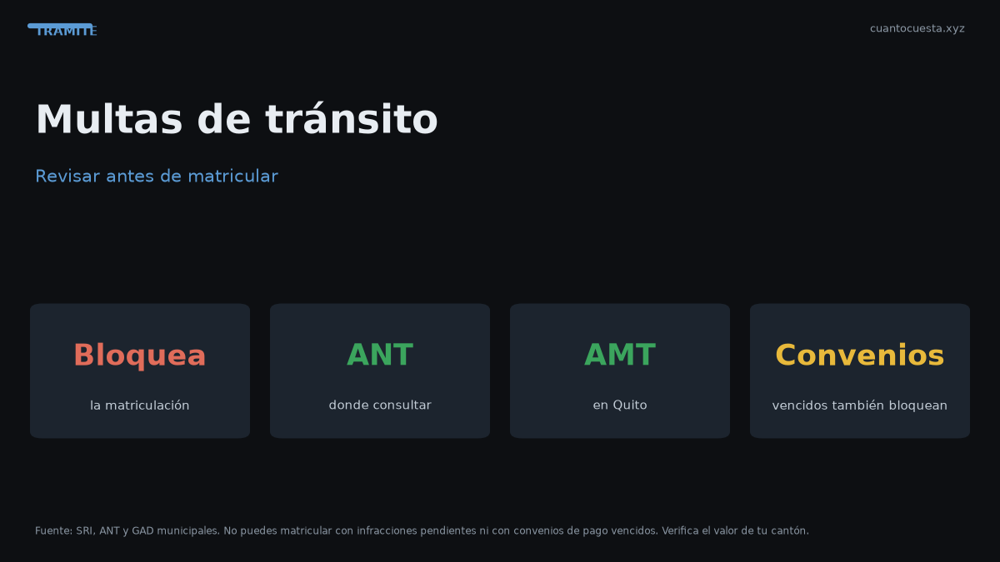

Cómo revisar multas de tránsito en Ecuador antes de matricular
Con multas pendientes no se matricula: dónde consultar tus infracciones en la ANT y la AMT, qué pasa con convenios vencidos y cómo impugnar a tiempo.

Si tienes multas de tránsito pendientes, no puedes matricular: el sistema bloquea el trámite hasta que estés al día. Revisar antes de hacer fila te ahorra el viaje, y la consulta es gratuita. Se hace por placa.
El bloqueo no distingue montos: una multa de $30 sin pagar detiene la misma matrícula de $180 que una deuda de $500.
Por qué la matrícula se bloquea
La matrícula vehicular exige estar al día en obligaciones. El sistema cruza tu placa con la base de infracciones. Si aparece algo pendiente —una multa, un convenio vencido, una contravención— el trámite no avanza, aunque tengas el dinero en la mano.
La revisión técnica también puede observarse por deudas de tránsito: no es solo la ventanilla de matriculación. Un pendiente te va a parar en más de un paso del mismo proceso.
Dónde consultar
| Canal | Qué puedes revisar |
|---|---|
| ANT (portal y ventanilla) | Infracciones a nivel nacional |
| AMT (Quito) | Contravenciones y multas de la ciudad |
| ATM (Guayaquil) | Infracciones locales y trámites asociados |
| Ventanilla de matriculación | Estado del vehículo antes de pagar |
Ingresa la placa y revisa todas las infracciones registradas, no solo la última. Muchas veces aparece una multa vieja que el conductor había olvidado por completo.
Cómo revisar paso a paso
- Entra al portal oficial de consulta de infracciones de la entidad correspondiente.
- Ingresa el número de placa del vehículo.
- Revisa la lista completa: fecha, tipo de infracción, entidad y estado.
- Anota las que aparecen como "pendiente" o "en convenio".
- Confirma el valor actualizado: una multa vieja suele incluir recargos.
- Paga o impugna antes de intentar matricular.
Convenios de pago vencidos
Un convenio de pago no extingue la deuda: la aplaza. Si dejas de pagar las cuotas, el convenio se vence y reaparece la deuda completa, a menudo con recargos. Este es el caso más engañoso de todos.
Un convenio vencido es una de las causas menos visibles de bloqueo. La persona pagó "su parte", cree que está limpia y descubre en ventanilla que el sistema la marca en mora. Revisa el estado del convenio, no solo si alguna vez lo firmaste.
Cuánto suman con intereses
El monto final depende del tipo de infracción, su antigüedad y los recargos aplicados. La lógica general:
| Momento del pago | Tendencia del monto |
|---|---|
| Pago inmediato o voluntario | Tarifa reducida según la infracción |
| Pago fuera de plazo | Tarifa completa más recargo |
| Deuda antigua | Tarifa completa más intereses |
| En coactiva | Tarifa completa, intereses y gastos |
Los porcentajes y recargos cambian por ordenanza y por año. Confirma el valor exacto en la entidad antes de pagar: la cifra que muestra el sistema es la que manda.
Cómo leer tu estado de infracciones
No basta con ver que hay una multa: hay que leer en qué estado está, porque cada estado se resuelve distinto.
| Estado | Qué significa | Qué hacer |
|---|---|---|
| Pendiente | Multa registrada sin pago | Pagar antes de matricular |
| En convenio | Con plan de pago vigente y al día | Verificar que no haya cuotas vencidas |
| Convenio vencido | Se dejó de pagar el plan | Regularizar: vuelve a bloquear |
| Impugnada | En reclamo, pendiente de resolución | Esperar; puede estar suspendida |
| En coactiva | Cobro por vía de apremio | Gestionar con la entidad antes de matricular |
Ese es el detalle que se pasa por alto: dos personas con "una multa" pueden estar en situaciones completamente distintas, y solo una de ellas tiene el trámite en regla.
Cómo impugnar una multa
Si la infracción no ocurrió, o los datos están mal, puedes impugnar:
- Reúne la evidencia: fotos, testimonio, documentos, ubicación y hora.
- Presenta la impugnación dentro del plazo que fija la norma.
- Espera la resolución: una multa impugnada puede quedar suspendida mientras se decide.
- Si te la rechazan, paga o apela según indique la resolución.
Impugnar no borra la deuda por arte de magia: la suspende mientras la autoridad decide. Y si el plazo pasa, pierdes esa vía y te queda solo pagar.
La evidencia es clave: sin fotos, testigos o documentos, la impugnación se cae sola. Y el plazo no se negocia ni se estira por pedido. Si dudas de si vale la pena impugnar, compara el monto de la multa con el tiempo y los papeles que vas a invertir.
Casos especiales que conviene revisar
- Multas mal asignadas a tu placa: cámaras o errores de digitación. Es raro, pero ocurre y se corrige con reclamo.
- Infracciones de un vehículo vendido: si vendiste el auto y no se hizo el traspaso, la multa puede seguir llegando a tu nombre.
- Deudas heredadas de la compra de un usado: al transferir, verifica que el vendedor no deje pendientes. Después de la transferencia, las multas nuevas son tuyas.
No pude matricular por multas: qué hacer
- Paga las pendientes y vuelve a intentar el trámite.
- Si no puedes pagar todo de una vez, consulta si existe plan de pago y cúmplelo.
- Si la deuda está en coactiva, gestiona directamente con la entidad antes de matriculación.
- Revisa que no haya infracciones mal asignadas.
- Guarda todos los comprobantes de pago.
Resumen práctico
- Con multas pendientes no se matricula. Consulta la placa antes de ir.
- Consulta en línea (ANT) y en tu municipio (AMT en Quito, ATM en Guayaquil).
- Los convenios vencidos vuelven a bloquear y son el caso más engañoso.
- El monto sube con el tiempo: pagar tarde cuesta más y puede llegar a coactiva.
- Puedes impugnar dentro del plazo; fuera de plazo, solo queda pagar.
- Verifica el valor exacto en la entidad: los recargos cambian por ordenanza y por año.
Los valores y procedimientos son referenciales y varían por ciudad y por normativa vigente. Confirma el estado de tu vehículo y el monto a pagar en los canales oficiales de la ANT y de tu municipio antes de matricular.
Sigue leyendo
Calendario de matriculación en Ecuador: qué mes te toca según tu placa
La matrícula se paga según el último dígito de tu placa. Revisa qué mes te corresponde, la mult
Cambio de características del vehículo en Ecuador: color, motor y carrocería
Cambiar el color, el motor o la carrocería de tu auto exige declararlo en la ANT: cuándo es obl
Certificado Único Vehicular (CUV) en Ecuador: qué es y cómo obtenerlo
El Certificado Único Vehicular (CUV) cuesta $7,50 en Ecuador. Qué información contiene, cuándo
Cómo hacer el traspaso de dominio de un vehículo en Ecuador (paso a paso)
Traspaso de dominio en Ecuador paso a paso: los 4 pasos ante notaría y ANT, el impuesto del 1%
Duplicado de matrícula y placas en Ecuador: qué hacer si las pierdes
Perdiste o te robaron las placas: pasos, denuncia, requisitos, costos ($23 placas, $25 especie,
Cómo usamos estos datos
Las cifras de esta guía provienen de fuentes públicas oficiales y tarifarios de concesionarios publicados. Los valores son referenciales: tasas municipales, promociones y precios de repuestos varían. Verifica siempre en la entidad o concesionario antes de decidir.